科別與課程圖示：真實醫學影像來源
每個圖示由本站已附、授權明確的真實醫學影像或醫院照片裁切而成；灰階影像以科別代表色做雙色調上色。圖示只作科別辨識，不是任何病例的病人影像。以 CC BY-SA 影像改作者依相同授權分享。
Each icon is cropped from a licensed real medical image or hospital photograph shipped with the site; grayscale images are duotoned in the department colour. Icons identify departments only and are not any case's patient images. Adaptations of CC BY-SA images are shared under the same licence.
| 科別 Department | 來源 Source | 作者 Author | 授權 Licence | 修改 Changes | |
|---|---|---|---|---|---|
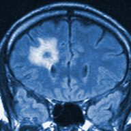 | 神經外科 Neurosurgery | 神經與放療：腦轉移病例 MRI 參考 Neuro-oncology: MRI reference from a brain-metastasis case | Nevit Dilmen | CC BY-SA 3.0 | cropped, resized, duotone in the department colour |
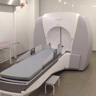 | 神經外科 Neurosurgery | 伽瑪刀立體定位放射手術設備參考 Gamma Knife stereotactic radiosurgery equipment reference | Mos.ru | CC BY 4.0 | cropped, resized |
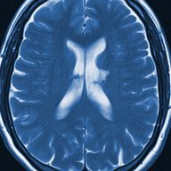 | 神經外科 Neurosurgery | 神經與復健：慢性腔隙性梗塞 MRI Neurology and rehabilitation: chronic lacunar-infarct MRI | Ptrump16 | CC BY-SA 4.0 | cropped, resized, duotone in the department colour |
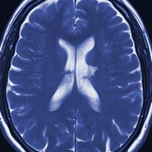 | 神經內科 Neurology | 神經與復健：慢性腔隙性梗塞 MRI Neurology and rehabilitation: chronic lacunar-infarct MRI | Ptrump16 | CC BY-SA 4.0 | cropped, resized, duotone in the department colour |
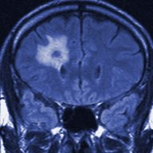 | 神經內科 Neurology | 神經與放療：腦轉移病例 MRI 參考 Neuro-oncology: MRI reference from a brain-metastasis case | Nevit Dilmen | CC BY-SA 3.0 | cropped, resized, duotone in the department colour |
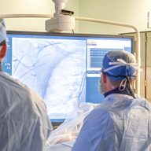 | 心臟內科 Cardiology | A cardiac catheterization procedure in the Naval Medical Center San Diego hospital’s cardiac catheterization laboratory.jpg A cardiac catheterization procedure in the Naval Medical Center San Diego hospital’s cardiac catheterization laboratory.jpg | Navy Medicine | Public domain | cropped, resized |
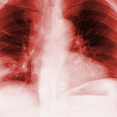 | 心臟內科 Cardiology | 胸腔：右中葉肺炎 Pulmonology: right middle-lobe pneumonia | Mikael Häggström, M.D. | CC0 | cropped, resized, duotone in the department colour |
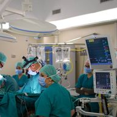 | 心臟外科 Cardiac surgery | Cardiac surgery operating room.jpg Cardiac surgery operating room.jpg | Pfree2014 | CC BY-SA 4.0 | cropped, resized |
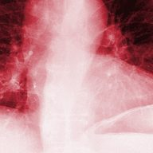 | 心臟外科 Cardiac surgery | 胸腔：右中葉肺炎 Pulmonology: right middle-lobe pneumonia | Mikael Häggström, M.D. | CC0 | cropped, resized, duotone in the department colour |
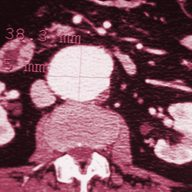 | 血管外科 Vascular surgery | 血管外科：腹主動脈瘤增強 CT Vascular surgery: contrast-enhanced CT of an aortic aneurysm | James Heilman, M.D. | CC BY-SA 3.0 | cropped, resized, duotone in the department colour |
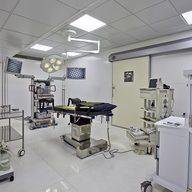 | 血管外科 Vascular surgery | Laparoscopic operating theatre.jpg Laparoscopic operating theatre.jpg | Dr.jayesh amin | CC BY-SA 3.0 | cropped, resized |
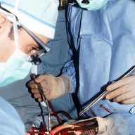 | 胸腔外科 Thoracic surgery | Surgeon operating, Fitzsimons Army Medical Center, circa 1990.JPEG Surgeon operating, Fitzsimons Army Medical Center, circa 1990.JPEG | Unknown authorUnknown author | Public domain | cropped, resized |
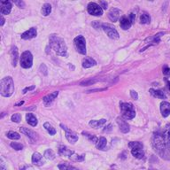 | 胸腔外科 Thoracic surgery | 腫瘤醫學：低分化肺腺癌病理 Oncology: poorly differentiated lung adenocarcinoma | Mikael Häggström, M.D. | CC0 | cropped, resized |
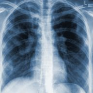 | 胸腔外科 Thoracic surgery | 感染科：肺結核病例胸片 Infectious disease: chest radiograph from a tuberculosis case | Basem Abbas Al Ubaidi | CC BY 4.0 | cropped, resized, duotone in the department colour |
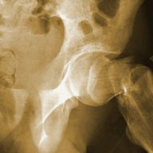 | 骨科 Orthopaedic surgery | 骨科與關節重建：近端股骨骨折觀察 Orthopedics and joint reconstruction: proximal femoral fracture | Booyabazooka | CC BY-SA 3.0 | cropped, resized, duotone in the department colour |
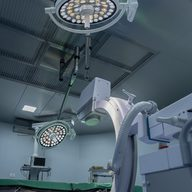 | 骨科 Orthopaedic surgery | 骨科手術室與 C 型臂影像設備 Orthopaedic theatre and C-arm imaging equipment | Drnabeelmohdkk1 | CC0 1.0 | cropped, resized |
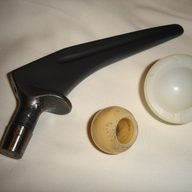 | 關節重建與運動醫學 Joint reconstruction and sports medicine | 髖關節植入物實物參考 Hip prosthesis components: equipment reference | Nuno Nogueira (Nmnogueira) | Public domain | cropped, resized |
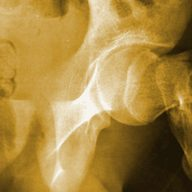 | 關節重建與運動醫學 Joint reconstruction and sports medicine | 骨科與關節重建：近端股骨骨折觀察 Orthopedics and joint reconstruction: proximal femoral fracture | Booyabazooka | CC BY-SA 3.0 | cropped, resized, duotone in the department colour |
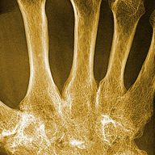 | 關節重建與運動醫學 Joint reconstruction and sports medicine | 風濕：類風濕關節炎的腕骨融合 Rheumatology: carpal ankylosis in rheumatoid arthritis | Mikael Häggström | CC0 | cropped, resized, duotone in the department colour |
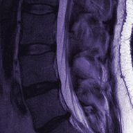 | 脊椎外科 Spine surgery | 脊椎與疼痛：腰椎 T2 MRI 解剖參考 Spine and pain medicine: lumbar T2 MRI anatomy reference | Stillwaterising | CC0 | cropped, resized, duotone in the department colour |
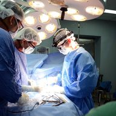 | 脊椎外科 Spine surgery | Lt. Justin Dye and Dr. Minh Hoaug Vo operate on a patient spine during Pacific Partnership 2017. (34532937326).jpg Lt. Justin Dye and Dr. Minh Hoaug Vo operate on a patient spine during Pacific Partnership 2017. (34532937326).jpg | Official U.S. Navy Page from United States of America Petty Officer 3rd Class Madailein Abbott/U.S. Navy | Public domain | cropped, resized |
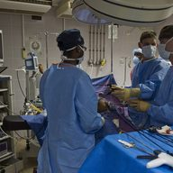 | 一般外科 General surgery | Camp Lemonnier Sailors perform surgery at Peltier Hospital DVIDS129743.jpg Camp Lemonnier Sailors perform surgery at Peltier Hospital DVIDS129743.jpg | Petty Officer 2nd Class Marc Rockwell-Pate | Public domain | cropped, resized |
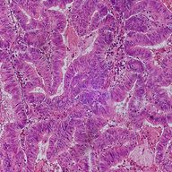 | 一般外科 General surgery | 腫瘤醫學：大腸直腸腺癌病理 Oncology: colorectal adenocarcinoma histology | Mikael Häggström, M.D. | CC0 | cropped, resized |
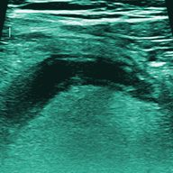 | 一般外科 General surgery | 急診與小兒外科：闌尾炎超音波 Emergency and pediatric surgery: appendicitis ultrasound | Borbély Márton | CC BY-SA 4.0 | cropped, resized, duotone in the department colour |
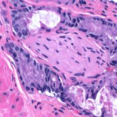 | 泌尿科 Urology | 腫瘤醫學：前列腺癌神經周圍侵犯 Oncology: prostate carcinoma around a nerve | Mikael Häggström, M.D. | CC0 | cropped, resized |
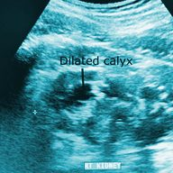 | 泌尿科 Urology | 腎臟：腎盞擴張與腎積水 Nephrology: dilated calyces in hydronephrosis | Cerevisae | CC BY-SA 4.0 | cropped, resized, duotone in the department colour |
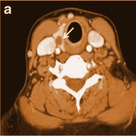 | 耳鼻喉科 Otolaryngology (ENT) | 內分泌：甲狀腺結節的跨影像對照 Endocrinology: thyroid nodule across modalities | Mnahi Bin Saeedan, Ibtisam Musallam Aljohani, Ayman Omar Khushaim, Salwa Qasim Bukhari, and Salahudin Tayeb Elnaas | CC BY 4.0 | cropped, resized, duotone in the department colour |
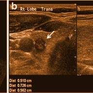 | 耳鼻喉科 Otolaryngology (ENT) | 內分泌：甲狀腺結節的跨影像對照 Endocrinology: thyroid nodule across modalities | Mnahi Bin Saeedan, Ibtisam Musallam Aljohani, Ayman Omar Khushaim, Salwa Qasim Bukhari, and Salahudin Tayeb Elnaas | CC BY 4.0 | cropped, resized, duotone in the department colour |
| ↳ Head-and-neck CT and ultrasound (thyroid, neck) — ENT and head-and-neck surgery share the neck. | |||||
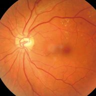 | 眼科 Ophthalmology | 眼科與內分泌：糖尿病視網膜病變眼底 Ophthalmology and endocrinology: diabetic retinopathy fundus | Shaofeng Hao; Changyan Liu; Na Li; Yanrong Wu; Dongdong Li; Qingyue Gao; Ziyou Yuan; Guanyan Li; Huilin Li; Jianzhou Yang; Shengfu Fan | CC BY 4.0 | cropped, resized |
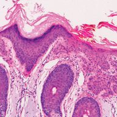 | 整形外科與燒傷 Plastic, reconstructive and burn surgery | 皮膚科：皮膚鱗狀細胞癌病理 Dermatology: cutaneous squamous-cell carcinoma histology | Valerie R. Yanofsky; Stephen E. Mercer; Robert G. Phelps | CC BY 4.0 | cropped, resized |
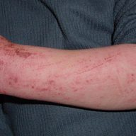 | 整形外科與燒傷 Plastic, reconstructive and burn surgery | 皮膚與兒科：異位性皮膚炎局部照片 Dermatology and pediatrics: localized atopic dermatitis | Eisfelder at German Wikipedia | CC BY-SA 3.0 | cropped, resized |
| ↳ Skin layers in histology and a skin photograph — reconstructive and burn surgery work on skin. | |||||
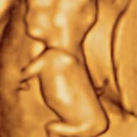 | 產科 Obstetrics | 產科：三維胎兒超音波表面參考 Obstetrics: 3D fetal ultrasound surface reference | Biagio Azzarelli | CC BY-SA 2.0 | cropped, resized |
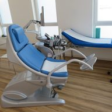 | 婦科與生殖醫學 Gynaecology and reproductive medicine | Chair for gynaecological examination.jpg Chair for gynaecological examination.jpg | Sciencia58 | CC0 | cropped, resized |
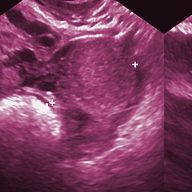 | 婦科與生殖醫學 Gynaecology and reproductive medicine | 婦科：卵巢囊腫超音波與診斷不確定性 Gynecology: ovarian-cyst ultrasound and uncertainty | Schomynv | CC0 | cropped, resized, duotone in the department colour |
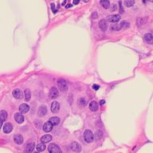 | 婦科與生殖醫學 Gynaecology and reproductive medicine | 腫瘤醫學：乳房浸潤性導管癌病理 Oncology: invasive ductal carcinoma of the breast | Mikael Häggström, M.D. | CC0 | cropped, resized |
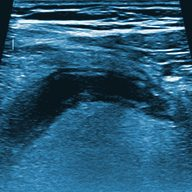 | 小兒外科 Paediatric surgery | 急診與小兒外科：闌尾炎超音波 Emergency and pediatric surgery: appendicitis ultrasound | Borbély Márton | CC BY-SA 4.0 | cropped, resized, duotone in the department colour |
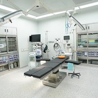 | 麻醉科 Anaesthesiology | 手術室與麻醉監測設備 Operating room and anaesthesia monitoring equipment | 연세건우병원 | CC BY 4.0 | cropped, resized |
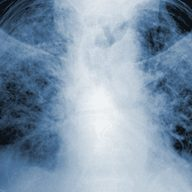 | 麻醉科 Anaesthesiology | 重症：ARDS 雙側肺部陰影 Critical care: bilateral opacities in ARDS | James Heilman, MD | CC BY-SA 3.0 | cropped, resized, duotone in the department colour |
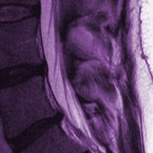 | 疼痛醫學 Pain medicine | 脊椎與疼痛：腰椎 T2 MRI 解剖參考 Spine and pain medicine: lumbar T2 MRI anatomy reference | Stillwaterising | CC0 | cropped, resized, duotone in the department colour |
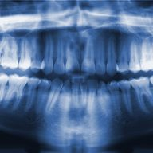 | 牙科與口腔顎面外科 Dentistry and oral-maxillofacial surgery | 牙科：全口環口攝影與阻生智齒 Dentistry: panoramic radiograph with impacted third molars | Coronation Dental Specialty Group | CC BY 3.0 | cropped, resized, duotone in the department colour |
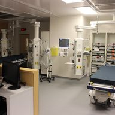 | 急診醫學 Emergency medicine | 急診復甦室空間參考 Emergency resuscitation room reference | Calvin411 | CC BY-SA 4.0 | cropped, resized |
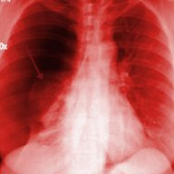 | 急診醫學 Emergency medicine | 急診：右側氣胸胸片 Emergency: right-sided pneumothorax | James Heilman, MD | CC BY 3.0 | cropped, resized, duotone in the department colour |
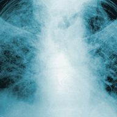 | 重症醫學 Critical care medicine | 重症：ARDS 雙側肺部陰影 Critical care: bilateral opacities in ARDS | James Heilman, MD | CC BY-SA 3.0 | cropped, resized, duotone in the department colour |
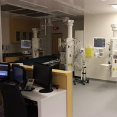 | 重症醫學 Critical care medicine | 急診復甦室空間參考 Emergency resuscitation room reference | Calvin411 | CC BY-SA 4.0 | cropped, resized |
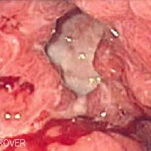 | 消化內科與肝膽科 Gastroenterology and hepatology | 消化：胃潰瘍內視鏡與病理確認 Gastroenterology: ulcer endoscopy and histology | Samir (The Scope) at English Wikipedia | CC BY-SA 3.0 | cropped, resized |
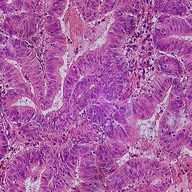 | 消化內科與肝膽科 Gastroenterology and hepatology | 腫瘤醫學：大腸直腸腺癌病理 Oncology: colorectal adenocarcinoma histology | Mikael Häggström, M.D. | CC0 | cropped, resized |
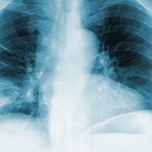 | 胸腔內科 Pulmonology | 胸腔：右中葉肺炎 Pulmonology: right middle-lobe pneumonia | Mikael Häggström, M.D. | CC0 | cropped, resized, duotone in the department colour |
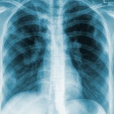 | 胸腔內科 Pulmonology | 感染科：肺結核病例胸片 Infectious disease: chest radiograph from a tuberculosis case | Basem Abbas Al Ubaidi | CC BY 4.0 | cropped, resized, duotone in the department colour |
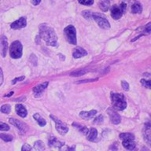 | 胸腔內科 Pulmonology | 腫瘤醫學：低分化肺腺癌病理 Oncology: poorly differentiated lung adenocarcinoma | Mikael Häggström, M.D. | CC0 | cropped, resized |
| 腎臟內科 Nephrology | 顯微實驗室：小鼠腎組織 16 層影像 Microscopy laboratory: 16-plane mouse kidney stack | Genevieve Buckley, Monash Micro Imaging (2018) | CC0 1.0 | cropped, resized, brightness and contrast stretched | |
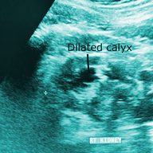 | 腎臟內科 Nephrology | 腎臟：腎盞擴張與腎積水 Nephrology: dilated calyces in hydronephrosis | Cerevisae | CC BY-SA 4.0 | cropped, resized, duotone in the department colour |
| 內分泌與新陳代謝科 Endocrinology and metabolism | 內分泌：甲狀腺結節的跨影像對照 Endocrinology: thyroid nodule across modalities | Mnahi Bin Saeedan, Ibtisam Musallam Aljohani, Ayman Omar Khushaim, Salwa Qasim Bukhari, and Salahudin Tayeb Elnaas | CC BY 4.0 | cropped, resized, duotone in the department colour | |
| 內分泌與新陳代謝科 Endocrinology and metabolism | 眼科與內分泌：糖尿病視網膜病變眼底 Ophthalmology and endocrinology: diabetic retinopathy fundus | Shaofeng Hao; Changyan Liu; Na Li; Yanrong Wu; Dongdong Li; Qingyue Gao; Ziyou Yuan; Guanyan Li; Huilin Li; Jianzhou Yang; Shengfu Fan | CC BY 4.0 | cropped, resized | |
| 風濕免疫科 Rheumatology and clinical immunology | 風濕：類風濕關節炎的腕骨融合 Rheumatology: carpal ankylosis in rheumatoid arthritis | Mikael Häggström | CC0 | cropped, resized, duotone in the department colour | |
| 風濕免疫科 Rheumatology and clinical immunology | 皮膚與風濕科：深色皮膚的乾癬斑塊 Dermatology and rheumatology: psoriasis on dark skin | TealComet | CC0 | cropped, resized | |
| 血液科 Haematology | 血液科：慢性淋巴性白血病抹片 Hematology: chronic lymphocytic leukemia smear | Mary Ann Thompson (VashiDonsk at English Wikipedia) | CC BY-SA 3.0 | cropped, resized | |
| 血液科 Haematology | 血液科：帶 Auer 小體的骨髓母細胞 Hematology: myeloblast with an Auer rod | PauloMourao | CC BY-SA 3.0 | cropped, resized | |
| 血液科 Haematology | 血液科：鐮刀型紅血球抹片 Hematology: sickle-cell blood smear | SpicyMilkBoy | CC BY-SA 4.0 | cropped, resized | |
| 血液科 Haematology | 血液科：缺鐵性貧血與抹片品質 Hematology: iron-deficiency morphology and smear quality | Ed Uthman | CC BY 2.0 | cropped, resized | |
| 腫瘤醫學 Medical oncology | 腫瘤醫學：乳房浸潤性導管癌病理 Oncology: invasive ductal carcinoma of the breast | Mikael Häggström, M.D. | CC0 | cropped, resized | |
| 腫瘤醫學 Medical oncology | 腫瘤與放療：何杰金淋巴瘤 PET／CT Oncology and radiation: Hodgkin lymphoma PET/CT | Hg6996; courtesy Südwestdeutsches PET-Zentrum Stuttgart, Diakonie-Klinikum | Public domain | cropped, resized | |
| 腫瘤醫學 Medical oncology | 腫瘤醫學：低分化肺腺癌病理 Oncology: poorly differentiated lung adenocarcinoma | Mikael Häggström, M.D. | CC0 | cropped, resized | |
| 放射腫瘤科 Radiation oncology | 腫瘤與放療：何杰金淋巴瘤 PET／CT Oncology and radiation: Hodgkin lymphoma PET/CT | Hg6996; courtesy Südwestdeutsches PET-Zentrum Stuttgart, Diakonie-Klinikum | Public domain | cropped, resized | |
| 放射腫瘤科 Radiation oncology | 腫瘤與放療：何杰金淋巴瘤 PET／CT Oncology and radiation: Hodgkin lymphoma PET/CT | Hg6996; courtesy Südwestdeutsches PET-Zentrum Stuttgart, Diakonie-Klinikum | Public domain | cropped, resized | |
| 放射腫瘤科 Radiation oncology | 神經與放療：腦轉移病例 MRI 參考 Neuro-oncology: MRI reference from a brain-metastasis case | Nevit Dilmen | CC BY-SA 3.0 | cropped, resized, duotone in the department colour | |
| 感染科 Infectious diseases | 感染與血液科：惡性瘧原蟲薄血片 Infectious disease and hematology: falciparum thin smear | Jenkayaks | CC BY-SA 3.0 | cropped, resized | |
| 感染科 Infectious diseases | 檢驗基礎：金黃色葡萄球菌革蘭氏染色 Laboratory foundations: S. aureus Gram stain | YTambe | CC BY-SA 3.0 | cropped, resized | |
| 感染科 Infectious diseases | 感染科：隱球菌墨汁染色 Infectious disease: Cryptococcus on India ink | CDC / Dr. Leanor Haley | Public domain | cropped, resized | |
| 感染科 Infectious diseases | 感染與皮膚科：體癬的環狀病灶 Infectious disease and dermatology: annular tinea corporis | CDC / Dr. Lucille K. Georg | Public domain | cropped, resized | |
| 皮膚科 Dermatology | 皮膚科：結節型基底細胞癌皮膚鏡 Dermatology: nodular basal-cell carcinoma dermoscopy | David.moreno72 | CC BY-SA 4.0 | cropped, resized | |
| 皮膚科 Dermatology | 皮膚與風濕科：深色皮膚的乾癬斑塊 Dermatology and rheumatology: psoriasis on dark skin | TealComet | CC0 | cropped, resized | |
| 皮膚科 Dermatology | 皮膚科：原位黑色素瘤的多模態對照 Dermatology: multimodal comparison in melanoma in situ | Juliana Casagrande Tavoloni Braga; Mariana Petaccia Macedo; Clovis Pinto; João Duprat; Maria Dirlei Begnami; Giovanni Pellacani; Gisele Gargantini Rezze | CC BY 4.0 | cropped, resized | |
| 精神醫學 Psychiatry | 神經與復健：慢性腔隙性梗塞 MRI Neurology and rehabilitation: chronic lacunar-infarct MRI | Ptrump16 | CC BY-SA 4.0 | cropped, resized, duotone in the department colour | |
| ↳ Brain MRI used for the organic (structural) differential, not to diagnose a psychiatric illness. | |||||
| 小兒科與新生兒科 Paediatrics and neonatology | 皮膚與兒科：異位性皮膚炎局部照片 Dermatology and pediatrics: localized atopic dermatitis | Eisfelder at German Wikipedia | CC BY-SA 3.0 | cropped, resized | |
| 復健醫學 Physical medicine and rehabilitation | 骨科與關節重建：近端股骨骨折觀察 Orthopedics and joint reconstruction: proximal femoral fracture | Booyabazooka | CC BY-SA 3.0 | cropped, resized, duotone in the department colour | |
| 復健醫學 Physical medicine and rehabilitation | 創傷病房空床區 Unoccupied trauma ward beds | Kolforn (Wikimedia) | CC BY-SA 4.0 | cropped, resized | |
| 老年醫學與家庭醫學 Geriatrics and family medicine | 創傷病房空床區 Unoccupied trauma ward beds | Kolforn (Wikimedia) | CC BY-SA 4.0 | cropped, resized | |
| 老年醫學與家庭醫學 Geriatrics and family medicine | 風濕：類風濕關節炎的腕骨融合 Rheumatology: carpal ankylosis in rheumatoid arthritis | Mikael Häggström | CC0 | cropped, resized, duotone in the department colour | |
| 影像醫學與核子醫學 Radiology and nuclear medicine | 電腦斷層掃描室 CT scanner room | Ptrump16 | CC BY-SA 4.0 | cropped, resized | |
| 影像醫學與核子醫學 Radiology and nuclear medicine | 血管外科：腹主動脈瘤增強 CT Vascular surgery: contrast-enhanced CT of an aortic aneurysm | James Heilman, M.D. | CC BY-SA 3.0 | cropped, resized, duotone in the department colour | |
| 影像醫學與核子醫學 Radiology and nuclear medicine | 胸腔：右中葉肺炎 Pulmonology: right middle-lobe pneumonia | Mikael Häggström, M.D. | CC0 | cropped, resized, duotone in the department colour | |
| 病理與檢驗醫學 Pathology and laboratory medicine | 腫瘤醫學：大腸直腸腺癌病理 Oncology: colorectal adenocarcinoma histology | Mikael Häggström, M.D. | CC0 | cropped, resized | |
| 病理與檢驗醫學 Pathology and laboratory medicine | 腫瘤醫學：低分化肺腺癌病理 Oncology: poorly differentiated lung adenocarcinoma | Mikael Häggström, M.D. | CC0 | cropped, resized | |
| 病理與檢驗醫學 Pathology and laboratory medicine | 腫瘤醫學：前列腺癌神經周圍侵犯 Oncology: prostate carcinoma around a nerve | Mikael Häggström, M.D. | CC0 | cropped, resized | |
| 護理技術 Nursing skills | 創傷病房空床區 Unoccupied trauma ward beds | Kolforn (Wikimedia) | CC BY-SA 4.0 | cropped, resized | |
| 藥理學與藥學 Pharmacology and pharmacy | 檢驗基礎：金黃色葡萄球菌革蘭氏染色 Laboratory foundations: S. aureus Gram stain | YTambe | CC BY-SA 3.0 | cropped, resized | |
| ↳ Bacteria on a Gram stain — the target of antimicrobial pharmacology. | |||||
| 公共衛生與流行病學 Public health and epidemiology | 感染科：肺結核病例胸片 Infectious disease: chest radiograph from a tuberculosis case | Basem Abbas Al Ubaidi | CC BY 4.0 | cropped, resized, duotone in the department colour | |
| 公共衛生與流行病學 Public health and epidemiology | 感染與血液科：惡性瘧原蟲薄血片 Infectious disease and hematology: falciparum thin smear | Jenkayaks | CC BY-SA 3.0 | cropped, resized | |
| 醫學遺傳學 Medical genetics | 細胞實驗室：人類細胞有絲分裂影像 Cell laboratory: human mitosis image | David Root | CC0 1.0 | cropped, resized, brightness and contrast stretched, pseudo-coloured in the department colour | |
| 基礎醫學：解剖、生理、生化、微生物 Foundations: anatomy, physiology, biochemistry, microbiology | 顯微實驗室：小鼠腎組織 16 層影像 Microscopy laboratory: 16-plane mouse kidney stack | Genevieve Buckley, Monash Micro Imaging (2018) | CC0 1.0 | cropped, resized, brightness and contrast stretched | |
| 基礎醫學：解剖、生理、生化、微生物 Foundations: anatomy, physiology, biochemistry, microbiology | 皮膚科：皮膚鱗狀細胞癌病理 Dermatology: cutaneous squamous-cell carcinoma histology | Valerie R. Yanofsky; Stephen E. Mercer; Robert G. Phelps | CC BY 4.0 | cropped, resized | |
| 基因體學與精準醫療 Genomics and precision medicine | 細胞實驗室：人類細胞有絲分裂影像 Cell laboratory: human mitosis image | David Root | CC0 1.0 | cropped, resized, brightness and contrast stretched, pseudo-coloured in the department colour | |
| 基因編輯與細胞治療 Gene editing and cell therapy | 血液科：帶 Auer 小體的骨髓母細胞 Hematology: myeloblast with an Auer rod | PauloMourao | CC BY-SA 3.0 | cropped, resized | |
| 免疫治療與疫苗科學 Immunotherapy and vaccine science | 血液科：何杰金淋巴瘤細胞學 Hematology: Hodgkin lymphoma cytology | Nephron | CC BY-SA 3.0 | cropped, resized | |
| 生醫工程與醫療器材 Biomedical engineering and medical devices | 髖關節植入物實物參考 Hip prosthesis components: equipment reference | Nuno Nogueira (Nmnogueira) | Public domain | cropped, resized | |
| ↳ A hip prosthesis — an engineered medical device. | |||||
| 神經科技與腦機介面 Neurotechnology and brain–computer interfaces | 神經與放療：腦轉移病例 MRI 參考 Neuro-oncology: MRI reference from a brain-metastasis case | Nevit Dilmen | CC BY-SA 3.0 | cropped, resized, duotone in the department colour | |
| ↳ Brain MRI — the organ that neurotechnology records from and stimulates. | |||||
| 再生醫學與抗衰老 Regenerative medicine and ageing biology | 顯微實驗室：小鼠腎組織 16 層影像 Microscopy laboratory: 16-plane mouse kidney stack | Genevieve Buckley, Monash Micro Imaging (2018) | CC0 1.0 | cropped, resized, brightness and contrast stretched | |
| 臨床研究與轉譯方法 Clinical research and translational methods | 檢驗基礎：金黃色葡萄球菌革蘭氏染色 Laboratory foundations: S. aureus Gram stain | YTambe | CC BY-SA 3.0 | cropped, resized | |
| 生醫研究技術 Biomedical research techniques | 感染科：隱球菌墨汁染色 Infectious disease: Cryptococcus on India ink | CDC / Dr. Leanor Haley | Public domain | cropped, resized | |
| 諾貝爾生理學或醫學獎（1901–2026） Nobel Prize in Physiology or Medicine (1901–2026) | 感染與血液科：惡性瘧原蟲薄血片 Infectious disease and hematology: falciparum thin smear | Jenkayaks | CC BY-SA 3.0 | cropped, resized | |
| ↳ Malaria parasites — the subject of the 1902 (Ross) and 1907 (Laveran) Nobel Prizes. | |||||
| 諾貝爾化學獎（生醫相關） Nobel Prize in Chemistry (biomedically relevant) | 顯微實驗室：小鼠腎組織 16 層影像 Microscopy laboratory: 16-plane mouse kidney stack | Genevieve Buckley, Monash Micro Imaging (2018) | CC0 1.0 | cropped, resized, brightness and contrast stretched | |
| ↳ Fluorescence microscopy — fluorescent-protein imaging was the 2008 Nobel Prize in Chemistry. | |||||
| AlphaGo 到 AlphaFold：深度學習的學理拆解 From AlphaGo to AlphaFold: deconstructing deep learning | 眼科與內分泌：糖尿病視網膜病變眼底 Ophthalmology and endocrinology: diabetic retinopathy fundus | Shaofeng Hao; Changyan Liu; Na Li; Yanrong Wu; Dongdong Li; Qingyue Gao; Ziyou Yuan; Guanyan Li; Huilin Li; Jianzhou Yang; Shengfu Fan | CC BY 4.0 | cropped, resized | |
| ↳ Colour fundus photograph — retinal images are a classic medical deep-learning task. | |||||
| 中醫基礎理論 TCM fundamental theory | 中醫藥材：HK CWB 銅鑼灣 Causeway Bay 維多利亞公園 Victoria Park HKBPE 工展會 Hong Kong Brands and Products Expo December 2024 R12S 616.jpg Chinese medicinal materials: HK CWB 銅鑼灣 Causeway Bay 維多利亞公園 Victoria Park HKBPE 工展會 Hong Kong Brands and Products Expo December 2024 R12S 616.jpg | Haelele Waimings MOA | CC0 | Wikimedia thumbnail, centre-cropped square, resized | |
| 中醫經典與名醫 TCM classics and master physicians | 中醫經典古籍：Folio Materia Medica Dioscurides Met 13.152.6.jpg Classical Chinese medical text: Folio Materia Medica Dioscurides Met 13.152.6.jpg | Marie-Lan Nguyen (2011) | Public domain | Wikimedia thumbnail, centre-cropped square, resized | |
| 中醫四診：望聞問切 TCM diagnostics: the four examinations | 舌診與脈診：Watercolour, Chinese doctor feeling the pulse of a patient. Wellcome L0004700.jpg Tongue and pulse diagnosis: Watercolour, Chinese doctor feeling the pulse of a patient. Wellcome L0004700.jpg | https://wellcomeimages.org/indexplus/obf_images/4b/70/19a90c3c59ff559d9a30f86dbfe4.jpg Gallery: https://wellcomeimages.org/indexplus/image/L0004700.html Wellcome Collection gallery (2018-04-06): https://wellcomecollection.org/works/kpreuaus CC-BY-4.0 | CC BY 4.0 | Wikimedia thumbnail, centre-cropped square, resized | |
| 針灸技術與操作 Acupuncture techniques | 針刺：Han Gold & Silver Acupuncture Needles (11867003425).jpg Acupuncture: Han Gold & Silver Acupuncture Needles (11867003425).jpg | Gary Todd from Xinzheng, China | CC0 | Wikimedia thumbnail, centre-cropped square, resized | |
| 灸法、拔罐、刮痧與外治 Moxibustion, cupping, gua sha and external therapies | 艾灸與拔罐：Church Moxa 3.jpg Moxibustion and cupping: Church Moxa 3.jpg | Aschroet | CC0 | Wikimedia thumbnail, centre-cropped square, resized | |
| 推拿手法 Tuina (Chinese manual therapy) | 推拿：2015-05-01 Massage therapy with Chinese kitchen knives on street in Tainan.jpg Tuina massage: 2015-05-01 Massage therapy with Chinese kitchen knives on street in Tainan.jpg | Sun Taro | CC BY-SA 2.0 | Wikimedia thumbnail, centre-cropped square, resized | |
| 泰式按摩與東南亞傳統療法 Thai massage and Southeast Asian traditions | 泰式按摩：Awesome Thai Massage in South Melbourne.jpg Thai massage: Awesome Thai Massage in South Melbourne.jpg | Azoma | CC BY-SA 4.0 | Wikimedia thumbnail, centre-cropped square, resized | |
| 氣功、導引與養生功法 Qigong, daoyin and health cultivation | 氣功與太極：Tai Chi Chuan In The Park.jpg Qigong and tai chi: Tai Chi Chuan In The Park.jpg | Seattletaijiquan | CC BY-SA 4.0 | Wikimedia thumbnail, centre-cropped square, resized | |
| 中醫內科病症 TCM internal medicine disorders | 中藥湯劑：Deep maroon palmate leaves of Hibiscus sabdariffa cultivar, locally known as Tengamora in Assam, growing in a garden. 01.jpg Herbal decoction: Deep maroon palmate leaves of Hibiscus sabdariffa cultivar, locally known as Tengamora in Assam, growing in a garden. 01.jpg | AjayDas | CC BY-SA 4.0 | Wikimedia thumbnail, centre-cropped square, resized | |
| 中醫婦科、兒科、皮膚、傷科、五官 TCM gynaecology, paediatrics, dermatology, traumatology and ENT/eye | 中藥房：201806 Jian Feng Pharmacy of Shizhenge.jpg Chinese pharmacy: 201806 Jian Feng Pharmacy of Shizhenge.jpg | MNXANL | CC BY-SA 4.0 | Wikimedia thumbnail, centre-cropped square, resized | |
| 食療與藥膳 Dietary therapy and medicinal cuisine | 藥膳：Bumbu Rawon.jpg Medicinal cuisine: Bumbu Rawon.jpg | Herusutimbul | CC BY-SA 4.0 | Wikimedia thumbnail, centre-cropped square, resized | |
| 中醫實習門診：虛擬病人 TCM internship clinic: virtual patients | 中醫門診：Harubiyori Chinese Medicine Clinic 20230428.jpg Chinese medicine clinic: Harubiyori Chinese Medicine Clinic 20230428.jpg | Solomon203 | CC BY-SA 4.0 | Wikimedia thumbnail, centre-cropped square, resized | |
| 十四經穴與奇穴（361 + 奇穴） The 361 classical acupoints and extra points | 針灸銅人與穴位：Bronze acupuncture figure, in silk covered box bearing text Wellcome L0057613.jpg Acupuncture figure and points: Bronze acupuncture figure, in silk covered box bearing text Wellcome L0057613.jpg | https://wellcomeimages.org/indexplus/obf_images/f5/10/af5c9b31cb0f0b77969071790e1d.jpg Gallery: https://wellcomeimages.org/indexplus/image/L0057613.html Wellcome Collection gallery (2018-03-27): https://wellcomecollection.org/works/h4ke74e3 CC-BY-4.0 | CC BY 4.0 | Wikimedia thumbnail, centre-cropped square, resized | |
| 中藥學（常用藥材） Chinese materia medica | 中藥材：Dried Ophiopogon japonicus sticks.jpg Chinese medicinal herbs: Dried Ophiopogon japonicus sticks.jpg | Fumikas Sagisavas | CC0 | Wikimedia thumbnail, centre-cropped square, resized | |
| 方劑學（經典名方） Classical formulas | 方劑與藥櫃：Medicine chest, China, 1801-1985 Wellcome L0066083.jpg Formulas and herb cabinet: Medicine chest, China, 1801-1985 Wellcome L0066083.jpg | https://wellcomeimages.org/indexplus/obf_images/27/07/83b20168ee3f3ebe4a853a1c2215.jpg Gallery: https://wellcomeimages.org/indexplus/image/L0066083.html Wellcome Collection gallery (2018-03-31): https://wellcomecollection.org/works/sqphcgv5 CC-BY-4.0 | CC BY 4.0 | Wikimedia thumbnail, centre-cropped square, resized | |